Tepna reads files, not live sensors. Each device writes a plain file per night — Polar Sensor Logger for the heart straps, ViHealth for the oxygen ring, the SD card for your CPAP, the Lingo app for glucose. Set it once, wear it overnight, drop the files into the analyzer. Here are all four loops.
The app is the recorder. The Polar sensors are what it talks to over Bluetooth.
A community app that connects to any Polar Bluetooth sensor and logs the raw streams — ECG, PPG, heartbeats, motion — to text files on your phone. No Polar account, no Polar cloud. It just records.
The most precise read — the heart's electrical beat, sample by sample. Feeds ECGDex.
Optical pulse from the forearm — comfortable for sleep. Feeds PulseDex.
Bluetooth on, phone near you through the night. That's the whole rig.
Consumer wearables and home devices you can buy off the shelf. Each records one signal cleanly to a file the analyzers understand.
A silicone ring that logs blood-oxygen, pulse and motion all night on its own memory — no phone needed while you sleep.
The reference-grade chest strap. Streams the heart's electrical beat sample by sample — the most precise signal in the suite.
An optical sensor worn on the forearm or temple. Comfortable enough to sleep in, it reads pulse from the skin (PPG / PPI).
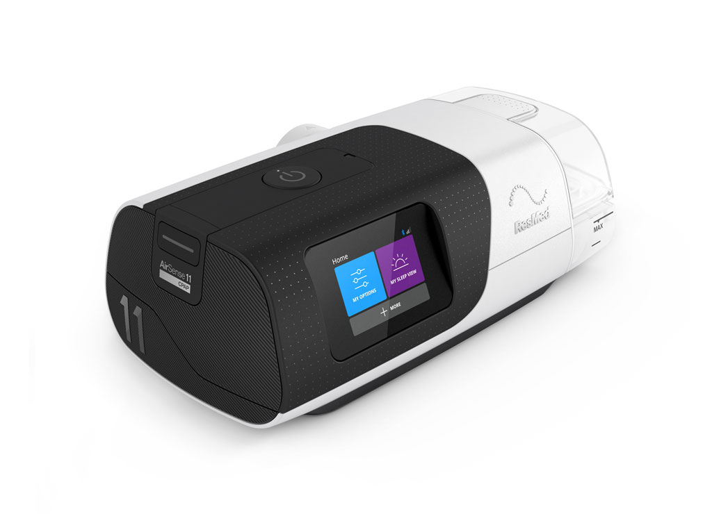
A home CPAP that records the whole therapy night to its microSD card — flow, pressure, leak, scored events and optional oximetry — as a set of EDF files. No app needed.
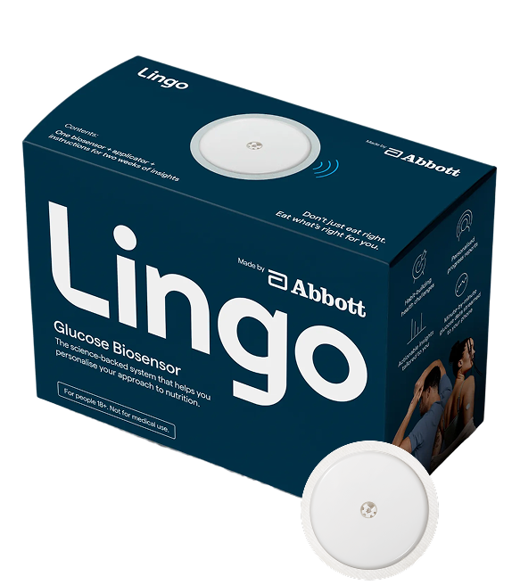
An over-the-counter CGM worn on the upper arm. Logs glucose continuously to the Lingo app, which exports a plain CSV of every reading on demand.
Real screens from the logger. Defaults are sane — you mostly tap through.
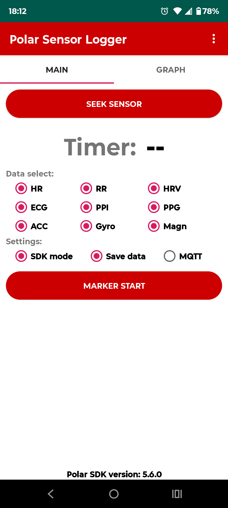
Open the app on the MAIN tab. Under Data select, tick the streams you want. For a full night, leave them all on — the analyzers ignore what they don't need.
Under Settings, switch on SDK mode and Save data. Leave MQTT off — that's for live network streaming, which Tepna doesn't use.
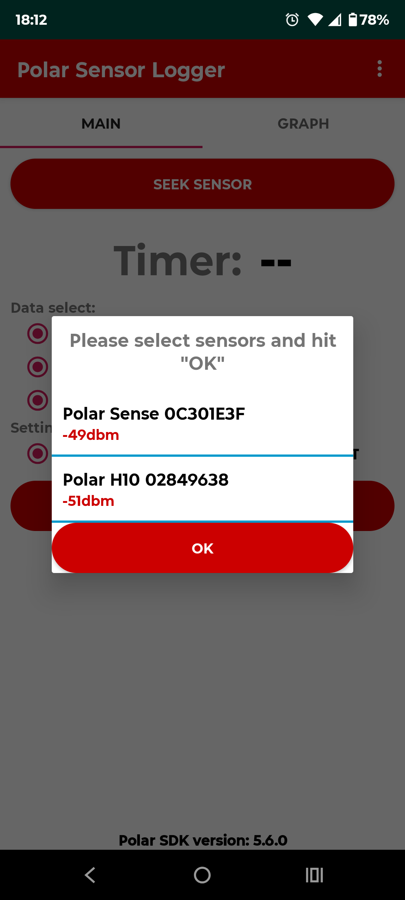
Tap SEEK SENSOR. The app scans Bluetooth and lists every nearby Polar device with its signal strength — here a Polar Sense at −49 dBm and a Polar H10 at −51 dBm.
Closer to zero is stronger. If a strap doesn't appear, wet the H10 electrodes, make sure it's worn, and seek again.
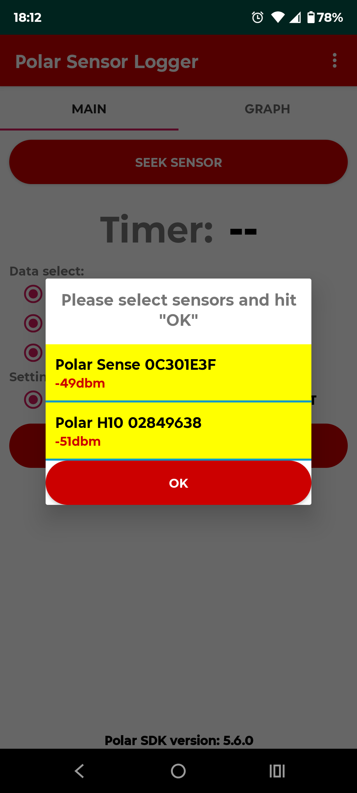
Tap each device you want so it highlights yellow, then hit OK. Selected sensors begin pairing.
Only tap the sensors you're actually wearing — an unselected strap is left alone and saves nothing.
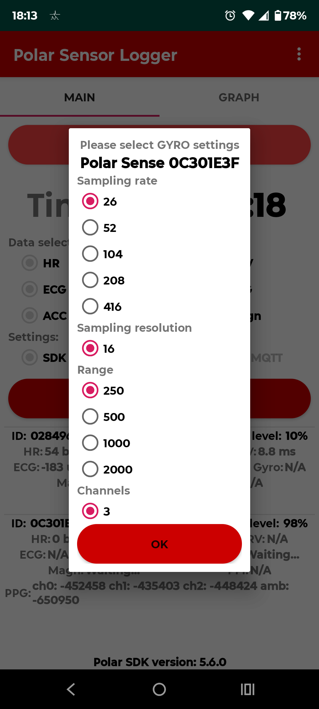
For each motion stream you enabled — Gyro, Magnetometer, ACC — the app pops a settings dialog with sampling rate, resolution and range. The defaults are fine. Just tap OK to each.
You'll see one dialog per stream in turn. Keep tapping OK until they're done and the strap connects.
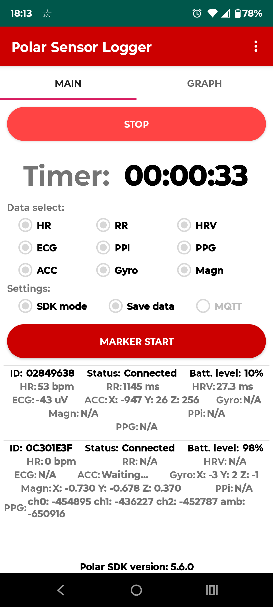
The button flips to STOP and the Timer starts counting. Each connected device shows live numbers — HR, ECG µV, RR, accelerometer, battery — so you can confirm both straps are streaming.
Now just go to sleep, or sit for your session. The phone keeps logging in the background as long as it's near you with Bluetooth on.
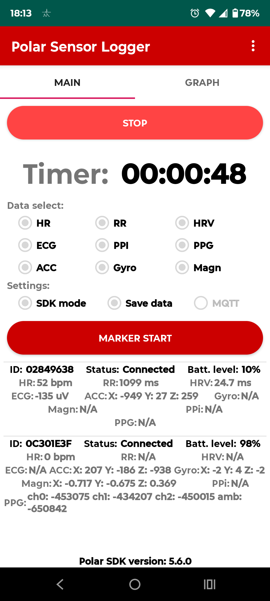
In the morning, tap STOP. The logger closes the recording and writes one text file per stream into its folder on your phone — named by sensor, date and stream.
Long signals like ECG and PPG are split into numbered parts (part01of05). Keep every part — the analyzer stitches them back together.
A different device with a different app. The O2Ring logs all night on its own memory — no phone, no Bluetooth babysitting. ViHealth pulls the night off it and hands you a CSV.
Get Viatom / Wellue's free ViHealth app from the Play Store. It's the bridge between the ring and your files — no account needed to export locally.
ViHealth on Google Play →The ring records to its own memory all night — the phone can be anywhere. Charge it through the day, slip it on before bed.
Open ViHealth with the ring powered on — it auto-detects and downloads the night. If the ring has gone to sleep, replug the USB cable (or sensor) to wake it, then sync.
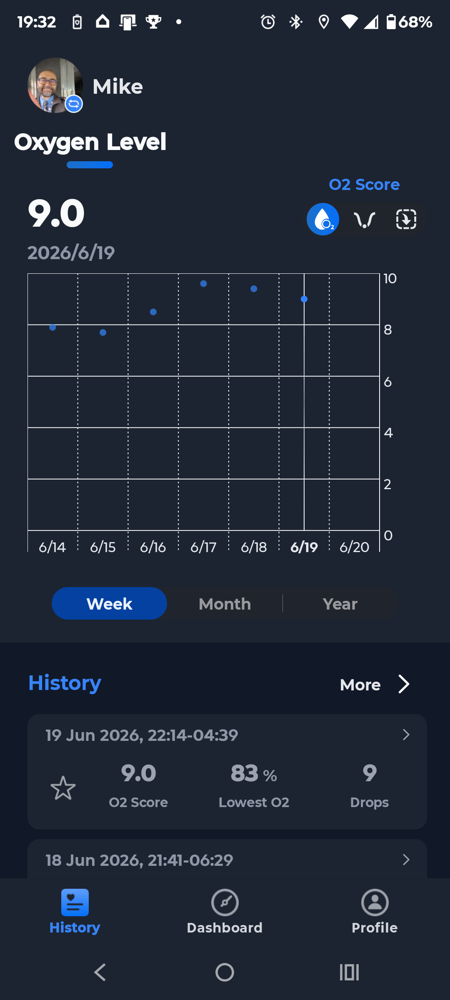
On the History tab, each synced night is listed with its O2 Score, Lowest O₂ and number of Drops. Tap the session you want to open it.
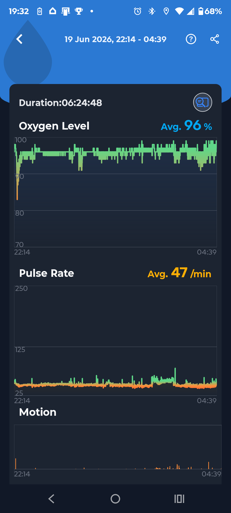
The session view draws Oxygen Level, Pulse Rate and Motion across the whole night, with the duration and averages up top. Opening this view is what generates the exportable data — so always view the night before sharing.
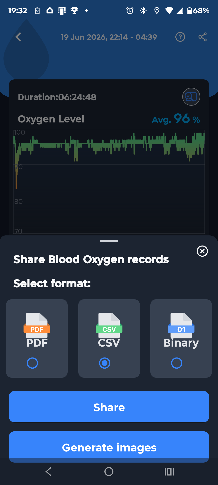
The share sheet offers three formats — PDF, CSV and Binary. Pick CSV or Binary and tap Share, then send it to yourself (Drive, email, USB — wherever's easy to reach from your computer).
/sdcard/PulsebitO2/
/sdcard/Android/data/com.viatom.vihealth/files/ViHealth/
/Android/data/com.viatom.vihealth/files/<model#>/Host/ ← newer ViHealth
The <model#> folder — e.g. 11 — is your ring's model number, so yours may read differently.
Download Viatom's free O2 Insight Pro desktop software and install it on your PC.
getwellue.com · PC software →Plug the ring into the PC with the cable that came with it — the software can't connect over Bluetooth. The window reads "Device connected" in the bottom-right.
Hit Download and O2 Insight Pro copies every night off the ring into a per-serial folder, ready to drop into OxyDex.
C:\Users\<you>\AppData\Local\O2 Insight Pro\DATA\<SerialNumber>\
Each ring gets its own <SerialNumber> folder — handy when you track more than one device.
Either way, copy the CSVs to your computer (tip: name the folder with the ring's serial number to keep devices apart), then drop them into OxyDex — one night or many at once. Nothing uploads.
Open OxyDex →No app, no Bluetooth. A ResMed AirSense / AirCurve writes the whole therapy night to the SD card in its side slot as a set of EDF files. Eject the card, read it on your computer, and drop the files into CPAPDex.
Unplug the machine (or wait for the display to sleep), then press the microSD card in the side slot until it clicks and pops out. Ejecting while powered down keeps the night's files intact.
Slot the card into a microSD adapter and into your computer's card reader. It mounts like any USB drive — open it and find the DATALOG folder, with one subfolder per date.
Each night is a small set of .edf files sharing one YYYYMMDD_HHMMSS_ prefix. Copy all of them together — CPAPDex lines them up by that shared timestamp.
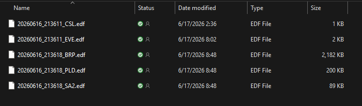
High-rate flow & pressure (~25 Hz). The biggest file — the raw breath-by-breath trace.
Per-half-second pressure, leak, respiratory rate, tidal volume, minute ventilation, snore.
Scored apneas & hypopneas — the annotations behind your residual AHI.
Cheyne–Stokes / periodic-breathing spans flagged across the night.
SpO₂ + pulse, 1 Hz — only present if a ResMed oximeter was attached. Optional.
Copy the night's .edf set to your computer, then drop the whole set into CPAPDex at once — events, leak, pressure and oximetry land on one timeline. Loading is additive: drop more nights later and they stack into one history. You can also drop an OxyDex or ECGDex .json export alongside to corroborate the read. Nothing uploads.
Abbott's Lingo biosensor logs glucose to its app. Three taps inside the app generate a plain CSV of every reading — send it to yourself and drop it into GlucoDex.
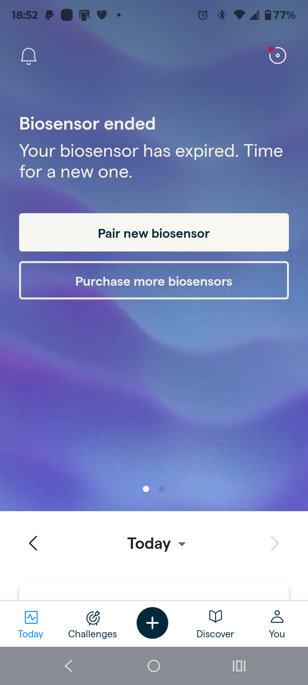
Tap You in the bottom bar to reach your Profile. Scroll to Actions and tap Export your glucose data.
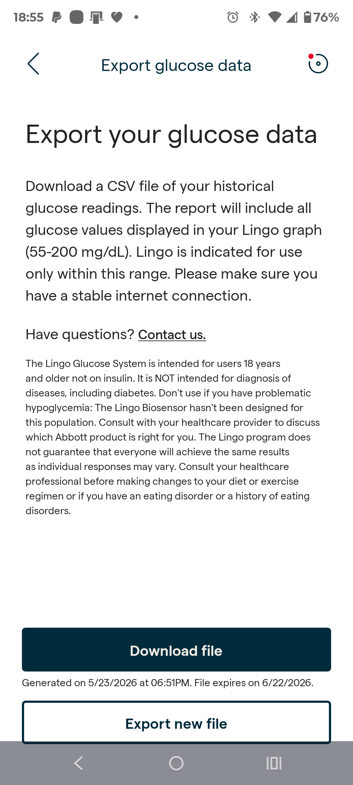
Tap Export new file to build a current report, wait for it to generate, then tap Download file. Lingo exports every value in its graph range — 55–200 mg/dL.
Send the CSV to yourself however's easy — share to Drive, email, or save to Files.
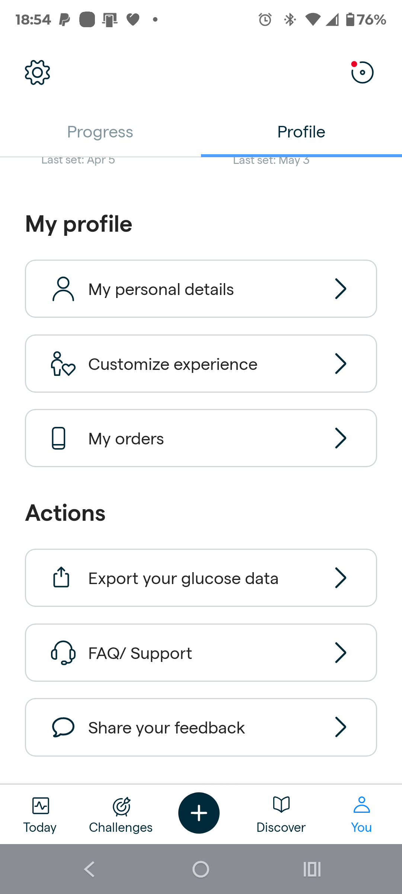
The downloaded CSV holds a timestamp and a glucose value per reading — exactly what GlucoDex parses. Each import is additive: drop one export today and another next week and they stack into one multi-day history.
Copy the CSV to your computer and drop it into GlucoDex — one export or many. It computes mean glucose, time-in-range, variability and AGP bands locally. Nothing uploads.
Open GlucoDex →The stream you logged tells you which Tepna app to open. You don't need every stream — record what you have.
Welltory morning checks → HRVDex · O2Ring nights → OxyDex · CPAP SD card → CPAPDex · Lingo / CGM → GlucoDex
HRVDex builds up over time. Every import is additive — drop a Welltory CSV today and another next week, or many nights at once, and they stack into one multi-day table (exact duplicates are skipped, and your history is saved in the browser between visits). ECGDex also hands its HRV straight over: its ⬇ HRVDex export writes a Welltory-style CSV (all loaded nights in one file), and HRVDex reads ECGDex JSON exports too — so a whole H10 history lands in HRVDex in a single drop.
Tepna runs in your browser and reads files locally — nothing uploads anywhere.
However the signal was saved — the logger's phone folder, the ring's app, the CPAP's SD card, or the Lingo CSV download — move the files to your computer.
Polar_H10_AAAAAAAA_…_ECG_part01of05.txtOpen the Tepna app for that stream — ECGDex for ECG, PulseDex for pulse — right here in your browser.
Drag the text files onto the analyzer — all parts together. It parses the night and gives you the read-out. Files never leave your device.
The logger writes to your phone. Tepna reads those files in your own browser and computes everything on-device. No account, no cloud, no server ever holds your signal.
Tepna computes biometric patterns from your wearable and sensor data to support personal self-quantification. It is not a medical device, does not diagnose, treat, cure, screen for, or prevent any disease or condition, and is not a substitute for professional clinical evaluation. It has not been reviewed or cleared by the FDA, CE, or any regulatory body. Always consult a qualified healthcare provider about your health. Use at your own risk. For research and personal use only. 100% local — no data leaves your device.